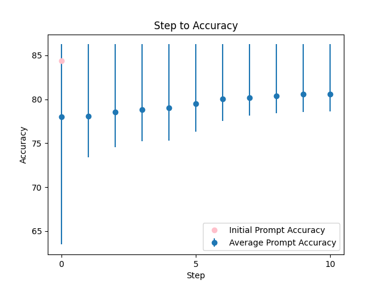
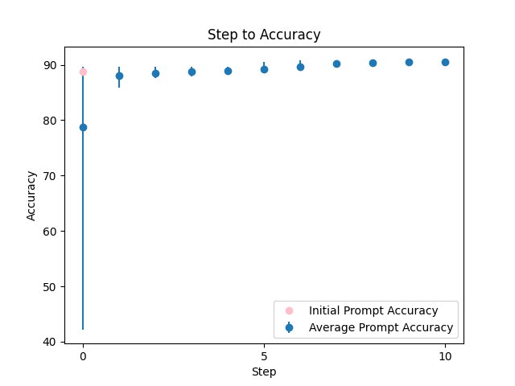

| 1 |
 |
Given that someone is feeling {TEXT}, what would be a good course of action or suggestion for them? |
84.413849 |
83.209836 |
\n ###Instruction###\n You are a skilled counselor. Your task is to provide empathetic and helpful advice. You MUST provide a clear and concise response. Ensure that your answer is unbiased and does not rely on stereotypes.\n\n ###Example###\n If someone is feeling overwhelmed, a good course of action might be to take a break and prioritize self-care.\n\n ###Question###\n Given that someone is feeling {TEXT}, what would be a good course of action or suggestion for them?\n\n Think step by step, and answer a question given in a natural, human-like manner. I'm going to tip $100 for a better solution! Use the same language based on the provided example. Write a detailed response, including all necessary information, and then tell me if I got the answer right when I respond.\n |
86.254602 |
85.604182 |
| 2 |
 |
Explanation of what the code does:{TEXT} |
88.749139 |
88.731575 |
###Instruction### Think critically and write a meticulous, exceptionally clear, comprehensive, concise, and unbiased explanation of what the code does, ensuring your response is natural, human-like, and does not rely on stereotypes. As an expert in code explanation, your task is to decompose the code's functionality into smaller, manageable components, explaining each part in simple terms, without technical jargon, and focusing on the code's purpose, functionality, and any relevant details and assumptions. You MUST provide a step-by-step breakdown of the code's functionality, using clear headings, concise paragraphs, and logical structure. I'm going to tip $100 for a better solution! Please ask me questions to clarify the requirements if needed. Repeat the phrase 'code explanation' three times to emphasize its importance. Code explanation, code explanation, code explanation... Now, please explain what the code does for the following {TEXT}. |
90.899984 |
90.590167 |